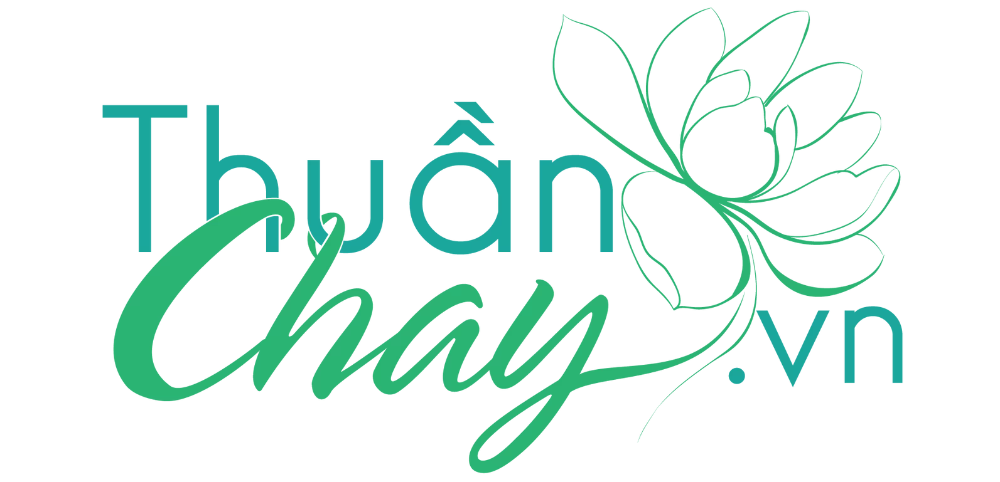

Ăn chay không chỉ là một chế độ ăn uống, mà còn là một hành trình sống thuận tự nhiên — nuôi dưỡng cả thân và tâm. Trong bài viết này, đội ngũ Thuần Chay tổng hợp những kiến thức thực tiễn, dễ áp dụng ngay cho bữa ăn hằng ngày của bạn.
Vì sao điều này quan trọng?
Duy trì một chế độ ăn thuần thực vật cân bằng giúp cơ thể nhẹ nhàng hơn, hệ tiêu hoá khoẻ mạnh và tinh thần minh mẫn. Tuy nhiên, nhiều người mới bắt đầu thường gặp khó khăn trong việc cân đối dinh dưỡng — đây là lúc những công thức truyền thống kết hợp khoa học hiện đại phát huy giá trị.
“Ăn chay đúng cách là ăn đủ, ăn đa dạng và lắng nghe cơ thể mình mỗi ngày.”
Gợi ý áp dụng ngay hôm nay
Bắt đầu từ những thay đổi nhỏ: thêm một bữa chay mỗi tuần, ưu tiên thực phẩm nguyên bản ít qua chế biến, và bổ sung các dưỡng chất dễ thiếu hụt như đạm thực vật, canxi và sắt từ các nguồn tự nhiên như đậu, hạt và rau lá xanh đậm.
Thuần Chay luôn đồng hành cùng bạn trên hành trình này — từ sản phẩm dinh dưỡng đến những chia sẻ kiến thức mỗi tuần trong chuyên mục Cộng đồng.